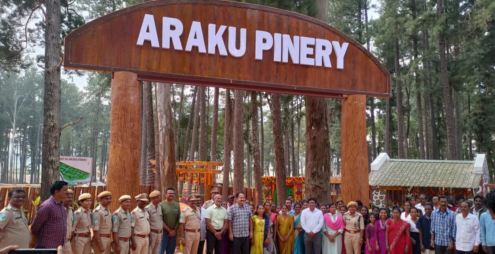
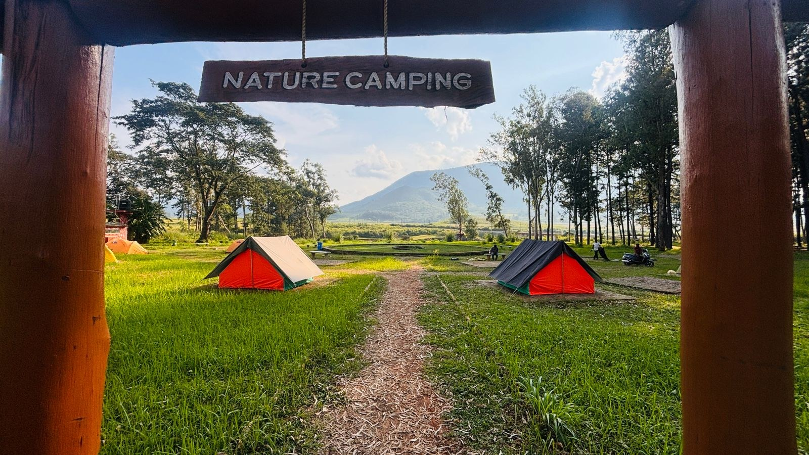
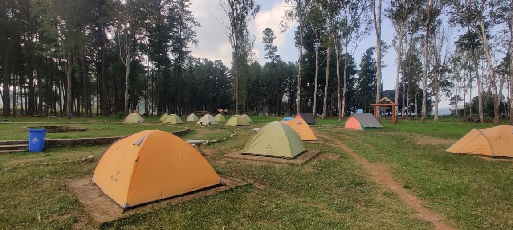
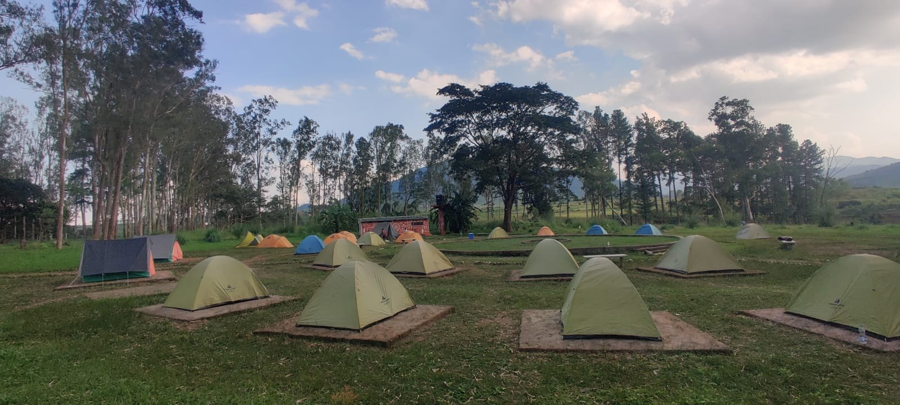
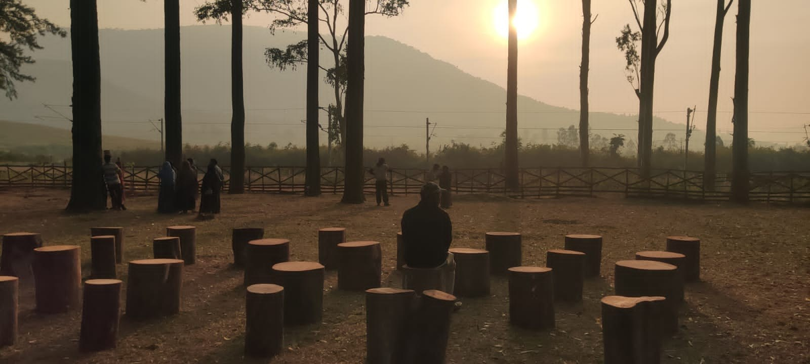
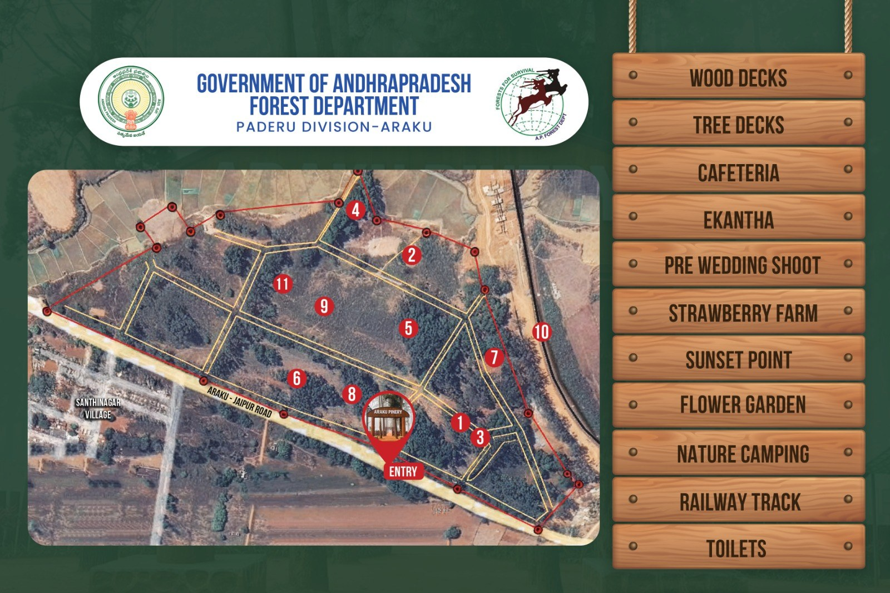
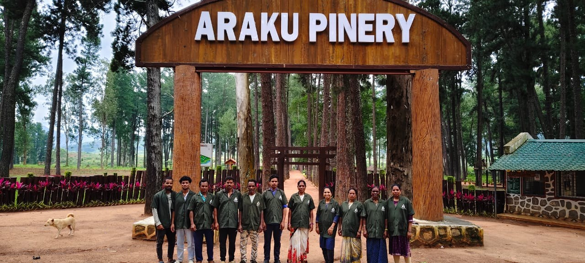

Explore Araku Pinery
Tap an icon to view the information.
🌲 Welcome to Araku Pinery
Nature • Conservation • Community • Eco-Tourism
1. Historical Background
Araku Pinery, also known as Anjoda Farm, is located near Shanthinagar in Araku Valley and is managed by the Andhra Pradesh Forest Department. The plantation was raised during 1970–71 over 14 hectares by Sri K. A. Madavraj, Research Officer, under the supervision of the then PCCF, Sri P. S. Rao.
Species include Pinus kesiya, Pinus caribaea, Pinus patula, Pinus roxburghii and Eucalyptus tereticornis. Seeds were sourced from the Khasi Hills and Jaintia Hills of Meghalaya and England.
1976: 100 hectares at Maredumilli and Paderu. 1977: 80 hectares at Paderu and Araku Valley.
2. Objectives
- Conserve ecosystems and natural areas.
- Promote responsible tourism by educating visitors about the local environment, natural surroundings and ecological conservation.
- Support protection and sustainable management while generating livelihood opportunities and economic benefits for local tribal communities.
3. Scenic Importance
The Araku Pinery covers 14 hectares and presents a picturesque landscape of pine and eucalyptus trees. Mature plantation, valley slopes and natural surroundings provide a distinctive scenic setting.
Old structures within the Pinery are popular locations for photography, pre-wedding shoots and film production.
Boundaries
- Southern: Kothavalasa–Kirandul railway line
- Eastern: Natural stream adjoining agricultural areas
- Western: Highway leading towards Jeypore
🌿 Eco-Tourism Development
The Eco-Tourism Initiative commenced on 19 November 2023 under the then PCCF Sri Y. Madhusudhan Reddy and was implemented by DFO Sri K. Vinod Kumar.
Facilities and Development
- Barbed-wire fencing and site protection
- Bush and weed clearance
- Dustbins, signage, walking paths and parking
- Ticket counter, park office, cafeteria and washrooms
- Wooden decks, tree deck, entrance arches and photo/selfie points
- Electricity, borewell and water facilities
- Nature camping and tented accommodation
- Pagodas/bamboo huts and seating
- Strawberry farm and RO water plant
- Rose gardens and native landscaping
- Valiselu, sunflower and marigold cultivation
- Children's play area and adventure arena
- Pine planting and nursery development
♻️ Plastic Reduction
A ₹20 refundable deposit is collected at the ticket counter for each plastic water bottle to encourage return of bottles and use of biodegradable alternatives.
📍 Location & Administrative Details
The Pinery is situated near Shanthinagar, approximately 6 km from Araku Valley, along the main road leading towards Jeypore.
📍 View on Google Maps📸 Photo Gallery
Explore Araku Pinery Eco-Tourism Initiative through photographs.







🎥 Araku Pinery Video
Watch the Araku Pinery Eco-Tourism Initiative through video.
Upload the MP4 file to the same GitHub repository as this index.html file.
👥 Community & Livelihood
The initiative links conservation, tourism and livelihood opportunities with active participation of local communities.
Livelihood Opportunities
Women Participation
Community Participation
The project is implemented by the Andhra Pradesh Forest Department through DFO Paderu, with active participation of Shanthinagar VSS and local communities in protection, maintenance, tourism services, cafeteria activities, cultural activities and other eco-tourism services.
📊 Visitor Statistics
| Particular | 2023–24 | 2024–25 | 2025–26 |
|---|---|---|---|
| Visitors | 47,910 | 62,414 | 1,79,070 |
| Pre-wedding | 895 | 898 | 1,846 |
| Film | 4 | 4 | 3 |
💰 Revenue Generation
| Revenue Head | 2023–24 | 2024–25 | 2025–26 |
|---|---|---|---|
| Ticket | ₹11,51,715 | ₹29,80,570 | ₹67,80,520 |
| Pre-wedding | ₹8,94,500 | ₹17,96,000 | ₹36,92,000 |
| Film | ₹85,000 | ₹70,000 | ₹35,000 |
| Nature camping | ₹5,55,000 | ₹1,78,500 | ₹95,000 |
| Campfire | ₹9,900 | ₹3,900 | ₹7,500 |
| Picnic | ₹0 | ₹0 | ₹10,000 |
| Total | ₹26,96,115 | ₹50,28,970 | ₹1,06,20,020 |
APO 2025–26: ₹110 lakh. Revenue achieved: ₹106.20 lakh.
📞 Contact & Official Information
Araku Pinery Eco-Tourism Initiative
Managed by the Andhra Pradesh Forest Department.
Location:
Near Shanthinagar, Araku Valley, Andhra Pradesh.